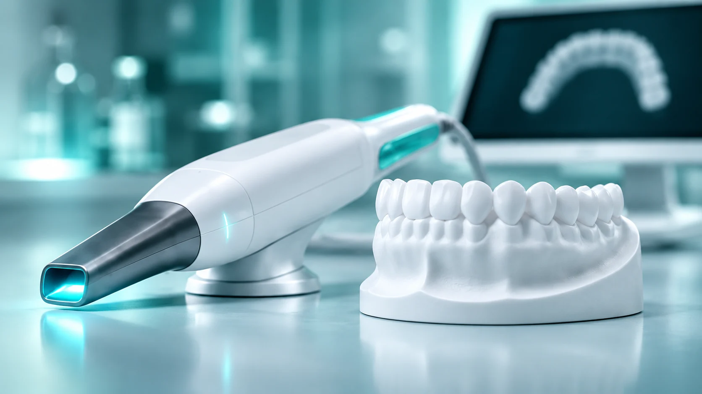
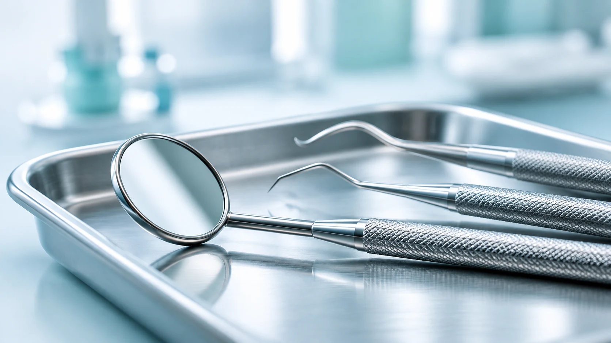

Özel Mehmet Ali Kaya
Ağız ve Diş Sağlığı Polikliniği
Ağız ve diş sağlığı ve diş hekimliği uygulamaları hakkında bilgilendirme.

Ağız ve Diş Sağlığı Bilgi Alanları
Diş hekimliği uygulamaları hakkında genel bilgiler.
İmplantEksik dişler için kullanılan yapay kökler.
İmplant, çene kemiğine yerleştirilen ve bir protezi destekleyebilen yapay köktür. Ağız ve kemik yapısı planlama sırasında değerlendirilir.
Zirkonyum ve Geçici KaplamalarKaplama malzemeleri ve geçici restorasyonlar.
Zirkonyum, diş kaplamalarında kullanılan seramik malzemelerden biridir. Geçici kaplamalar, kalıcı restorasyon hazırlanırken dişi örtebilir.
Gülüş TasarımıDiş görünümünün planlanmasına ilişkin bilgiler.
Estetik diş hekimliğinde dişlerin biçimi, dizilimi, diş eti görünümü ve ağız sağlığı birlikte değerlendirilir.
Diş BeyazlatmaDiş rengini değiştirmeye yönelik uygulamalar.
Beyazlatma planlamasında renk değişiminin nedeni, mevcut restorasyonlar ve hassasiyet değerlendirilir.
Kanal TedavisiDişin iç dokusuna yönelik tedavi.
Dişin içindeki etkilenen doku uzaklaştırılır, kök kanalları temizlenir ve doldurulur.
DolguDiş dokusu kaybının onarımı.
Dolgu, çürük veya kırık nedeniyle kaybedilen diş dokusunu onarmak için kullanılabilir.
Diş Taşı TemizliğiSertleşmiş plak birikimlerinin temizlenmesi.
Diş taşı, mineralize olmuş plak birikimidir. Temizlikte diş yüzeyi ve diş eti çevresindeki birikimler uzaklaştırılır.
Çocuk Diş SağlığıSüt dişleri ve kalıcı dişlerin bakımı.
Yaşa uygun ağız hijyeni, beslenme alışkanlıkları ve süt dişlerinin takibi değerlendirme konularıdır.
Hekimlerimiz
Klinikte faaliyet gösteren diş hekimleri.
Dt. Mehmet Ali Kaya
Diş Hekimi
Dt. Ayşe Karagedik Kaya
Diş Hekimi
Dt. Belgin Göksu
Diş Hekimi

Dijital Diş Hekimliği Teknolojileri
Ağız içi yüzeylerin dijital ölçü verisine dönüştürülmesidir.
Diş ve çevre dokuların üç boyutlu görüntülerini kaydeden cihazdır.
Dijital modelleri, malzemeyi katmanlar halinde işleyerek fiziksel modele dönüştürür.